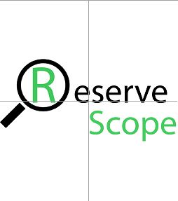
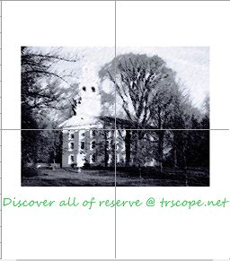

Week 3
The assignment for the week was to use Adobe Illustrator to create a pattern or image to print on our personalized T-shirt.
Adobe Illustrator
In order to promote a student website on campus, I made a logo shirt.
Below is the printed product.

The shirt was intended to be part of the PR campaign for Reserve Scope. However, after discussing with some of my peers, I realized that the image was too violent.
Thus I changed the image to a magnifying glass and put the view on the back.

The final product is eventually approved and one of the head officials wore it for cross-country practice.